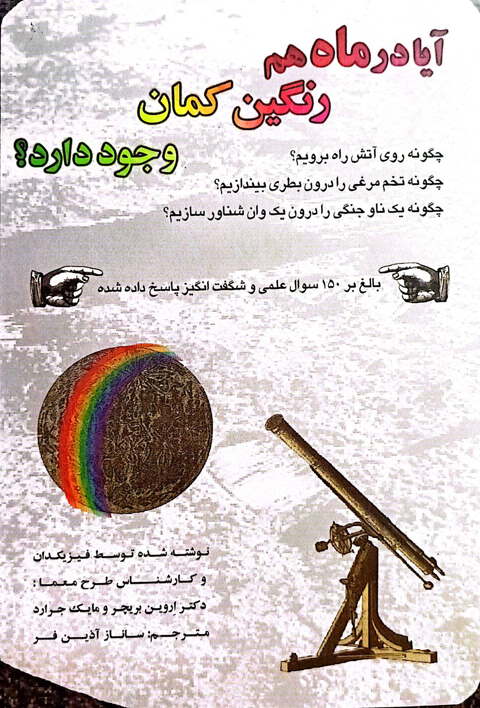

مترجم و نویسنده
«ترجمه، ادبیات ملی را جهانی میکند.»
ساناز آذینفر مترجمی پرشور و دقیق با پنج کتاب منتشرشده است. آثار او پلی میان فرهنگهاست و خوانندگان فارسیزبان را با ادبیات جهان از طریق ترجمههایی روان و وفادار پیوند میدهد.

اثر دکتر اروین بریچر و مایک جرارد
مترجم: ساناز آذینفر
سال انتشار: ۱۳۹۴
اثر مارکوس آئورلیوس
مترجم: ساناز آذینفر
سال انتشار: ۱۳۹۹
اثر نیک باترورث
مترجم: ساناز آذینفر
سال انتشار: ۱۳۹۹
اثر نیک باترورث
مترجم: ساناز آذینفر
سال انتشار: ۱۴۰۰
اثر شونمیو ماسونو
مترجم: ساناز آذینفر
سال انتشار: ۱۴۰۲
اثر استیو لاریتسون
مترجم: امیرعلی توجه
ویراستار: ساناز آذینفر
سال انتشار: ۱۳۹۶
برای ارتباط و همکاری میتوانید از طریق ایمیل زیر در تماس باشید:
ارسال ایمیل